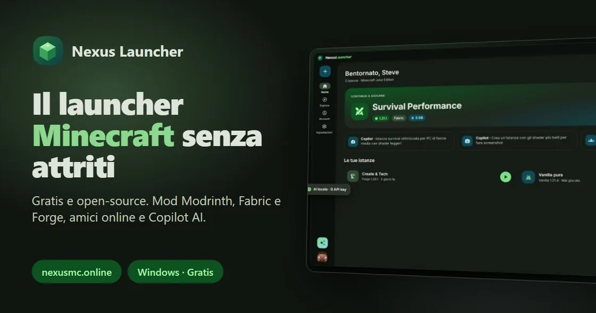
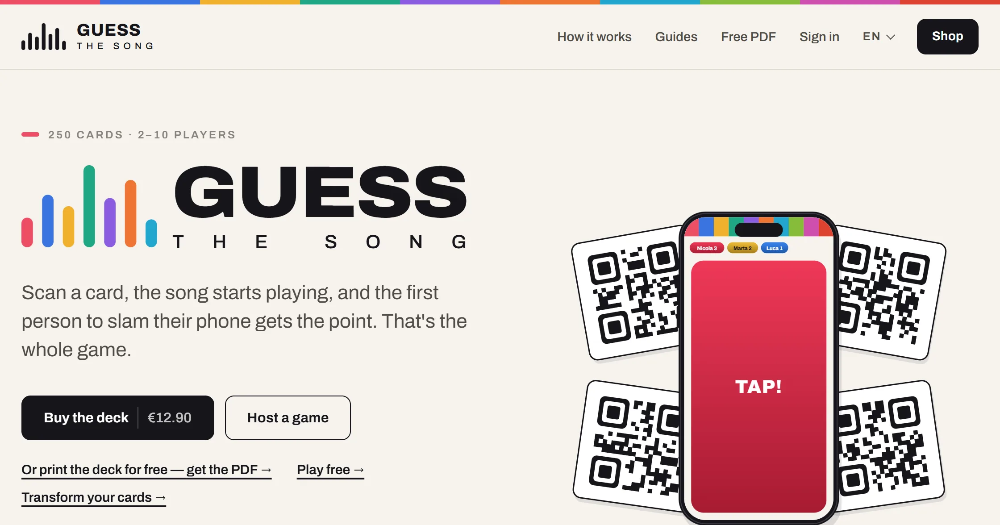
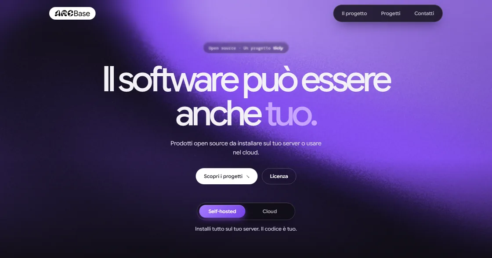
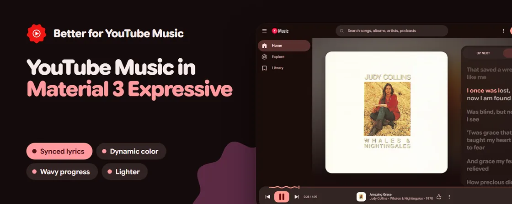
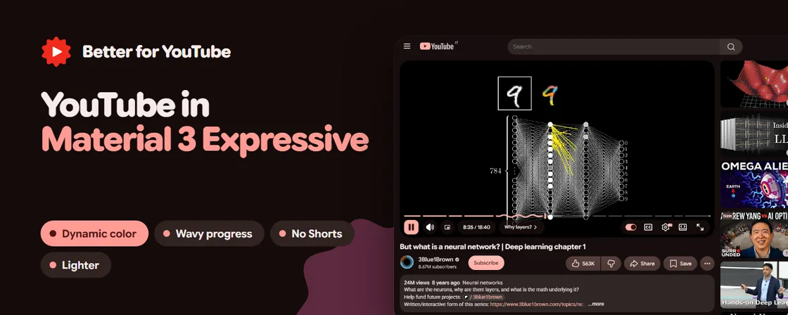
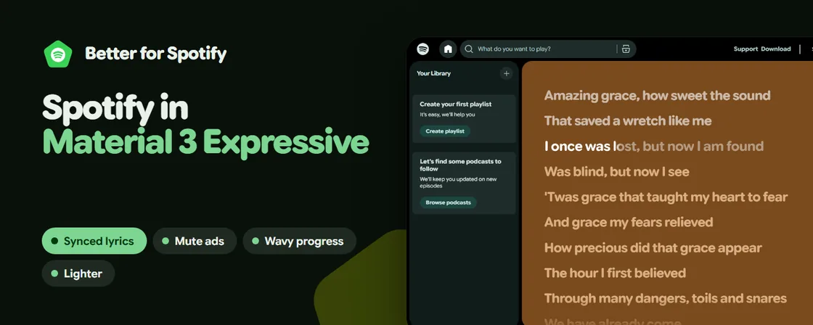

ticly
A digital ecosystem of apps, games and services built to feel effortless, elegant and fast — music streaming, mobility with ticly Maps, productivity and AI, all designed together.
ticly.it00 — Intro
I build things that feel good to use — apps, browser extensions, launchers and whole ecosystems.
A digital ecosystem of apps, games and services built to feel effortless, elegant and fast — music streaming, mobility with ticly Maps, productivity and AI, all designed together.
ticly.it
Minecraft launcher · Out nowAn open-source launcher for Minecraft: Java Edition. Official Microsoft sign-in, isolated instances with Fabric, Quilt, Forge and NeoForge, a Modrinth mod manager, an AI modding copilot, friends and world hosting.

Party game · Out nowA music party game for 2–10 players: scan a card, the song starts playing, and the first person to slam their phone gets the point. Everyone else just opens a link — no app, no sign-up, no setup. Buy the 250-card deck, print it yourself for free, or host a game and play free.
guessthesong.it
Open source · A ticly projectSoftware without fences: open-source products you can install on your own server or use in a managed cloud — the same product either way, no lock-in. AGPL-3.0, funded by ticly. Coming first: Filo (shared notes and decisions), Ramo (everyday automations) and Traccia (a view of your services).
arcbase.org Operating system · In development
Operating system · In development
An operating system written from scratch, because resetting Windows for the fifth time got old. Open source down to the last line, updates only when they're needed, a desktop that stays out of your way — and the goal of running Windows, Mac and Linux software.

Chrome extension · Windows appYouTube Music in Material 3 Expressive: colours from the album art, letter-by-letter synced karaoke lyrics, a wavy progress bar and a lighter, faster app. Also available as a standalone Windows app.
Chrome Web Store
Chrome extensionYouTube in Material 3 Expressive: colours from what you watch, a wavy progress bar, no Shorts, 1080p minimum and a lighter page.
Chrome Web Store
Chrome extensionThe Spotify Web Player in Material 3 Expressive: colours from the album art, synced karaoke lyrics, a wavy progress bar and ad muting.
Chrome Web StoreLive from my GitHub profile — private work shows up as anonymous squares.
Drag to rotate · tap a column for details
I'm a student at the Istituto Tecnico Tecnologico G. Marconi in Rovereto, on the Automation track — electronics, electrical systems and industrial control.
marconirovereto.itGot an idea, a bug report or just want to talk? My inbox is open.